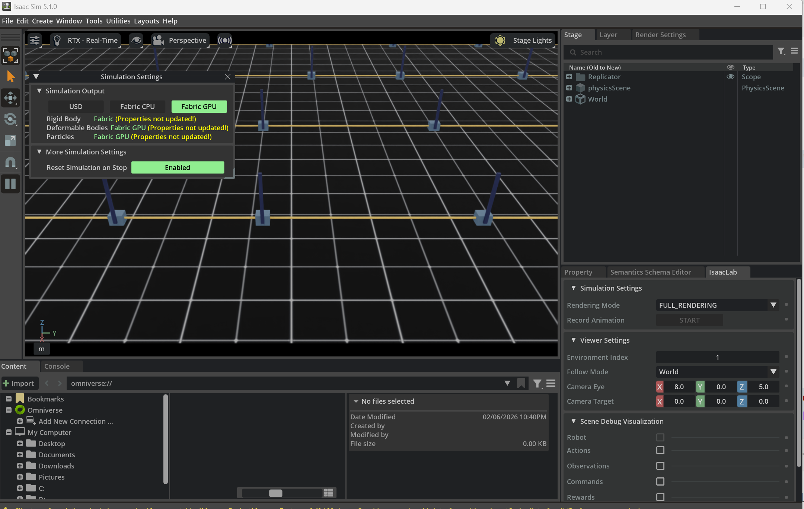
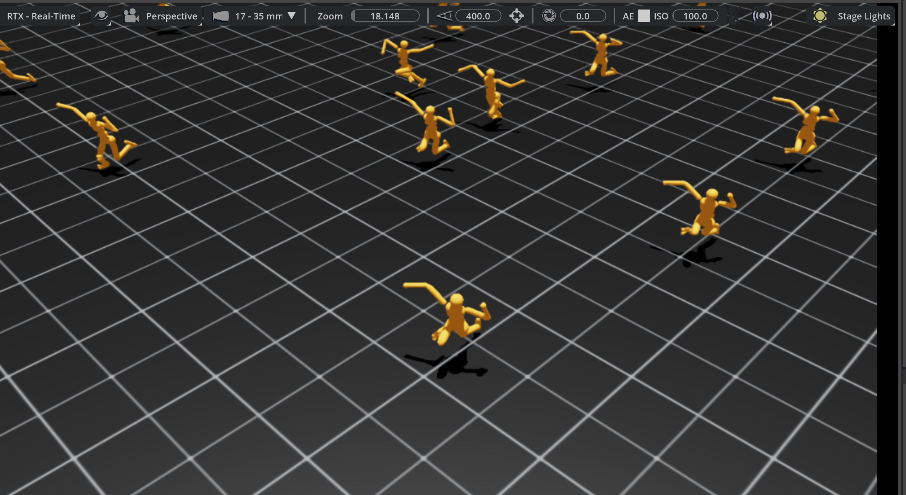

仿真世界构建与物理规则
机器人仿真并不是“把几个资产扔进仿真器”那么简单。真正能用于训练、评测、部署迁移的仿真世界，必须同时回答三个问题：
- 世界是怎么组织的？
- 世界遵循什么物理规则？
- 这个世界如何被验证、随机化并服务于 Sim2Real？
这篇笔记讨论的不是单个资产，而是资产如何组成世界。它位于 仿真资产 之后、仿真平台 之下、Sim2Real 之前：前者告诉你“零件是什么”，本文告诉你“零件如何拼成一个可运行、可训练、可迁移的宇宙”。
1. 世界构建总论
1.1 什么是“仿真世界”
在具身智能里，世界（World）通常不是单纯的 3D 场景文件，而是以下几个对象的组合：
也就是说，一个世界至少要同时定义：
- 哪些实体存在
- 它们如何组织
- 它们如何运动和接触
- 任务何时开始和结束
- 策略能看到什么、能控制什么
1.2 世界、场景、任务、episode 的层次
| 概念 | 含义 | 典型例子 |
|---|---|---|
| World | 最大容器，包含场景、规则、任务接口 | KitchenPickWorld |
| Scene | 静态或半静态空间布局 | 厨房台面、仓储通道 |
| Task | 目标定义与成功标准 | Pick red mug |
| Episode | 单次 roll-out | 一次从 reset 到 done 的执行 |
| Domain | 参数分布与随机化空间 | 光照、摩擦、噪声分布 |
| Benchmark | 一组标准化任务与评测协议 | LIBERO、RLBench、SIMPLER |
1.3 一个“好世界”应满足什么条件
| 维度 | 要求 |
|---|---|
| 正确性 | 物理、坐标、传感器、任务逻辑一致 |
| 稳定性 | 长时间 roll-out 不炸 |
| 可控性 | reset、采样、随机化都可配置 |
| 可复现性 | seed 固定后可复现 |
| 可扩展性 | 能加新资产、新任务、新传感器 |
| 可迁移性 | 能服务 Sim2Real |
1.4 从平台视角看世界构建
Figure 1 — 世界构建是一条强依赖关口链：每步收窄、需通过门控条件才解锁下一步，reset/randomization 反过来压测前面所有步——这正是世界层最易被低估却最易整体崩塌的原因。
1.5 为什么世界层是最容易被低估的工程层
算法工程师常常默认以下前提：
- reset 总是干净的
- 接触总是稳定的
- 相机总是朝对方向
- 同一个任务在并行环境里行为一致
实际项目里，这些都要靠世界层来保证。很多训练结果看上去像是算法差异，实质上是世界层的系统偏差。
2. 世界组织与层次结构
2.1 通用层次结构
一个通用仿真世界通常可以拆成：
Figure 2 — 通用仿真世界是一棵场景图树：World→Scene→Entity 递归下行，Entity 处分出 Component（物理/渲染/传感器）与 Task Hooks（reset/reward）两支；树的形状即组织风格本身。
2.2 世界组织的常见风格
| 风格 | 代表系统 | 特点 |
|---|---|---|
| 树状场景图 | USD, Smallville | 层次清晰、组合性强 |
| worldbody 递归体 | MuJoCo | 物理与层次耦合紧密 |
| ECS / component | Unity, 部分仿真引擎 | 解耦性强 |
| 配置驱动 world + task | Isaac Lab, ManiSkill | 与训练流程结合好 |
2.3 Smallville 树结构的启示
虚拟世界仿真引擎 里的 Smallville 看似是社会仿真，不是机器人平台，但它有一个非常重要的工程思想：世界不是一张图，而是一棵带语义的树。
World
├── House
│ ├── Kitchen
│ │ ├── Table
│ │ └── Cup
│ └── Bedroom
└── Cafe
对机器人仿真也是一样。树结构的好处是：
- 更容易管理局部变换
- 更容易做部分加载
- 更容易做语义继承
2.4 USD scene graph
USD 的世界组织优势在于：
- 引用（reference）
- 实例化（instance）
- layer 叠加
- 变换继承
这使得一个世界可以由多个子层拼装：
- 基础建筑层
- 家具布局层
- 机器人层
- 灯光层
- 任务对象层
- 随机化覆盖层
2.5 SDF world
SDF 更接近“完整世界定义文件”：
- world
- model
- link
- joint
- light
- physics
- plugin
对 Gazebo 来说，世界构建不仅是摆东西，也是把模拟引擎设置、传感器插件、话题桥接写进统一描述。
2.6 MuJoCo worldbody
MuJoCo 的世界组织更强调：
- body 递归层次
- geom 与 joint 的紧耦合
- contact / actuator / sensor 的统一物理视角
它不天然像 USD 那样适合大型协作资产库，但对研究型世界构建非常高效。
2.7 组织边界：什么该做成 entity，什么该做成 component
| 对象 | 建议 |
|---|---|
| 机器人 | 独立 entity |
| 抽屉 | 独立 entity，内部再细分部件 |
| 灯光 | 可做成 scene component 或独立 entity |
| 传感器 rig | 通常挂在 entity 上，但作为可复用 component 管理 |
| 任务成功判定 | 不是实体，而是 world/task layer 逻辑 |
2.8 世界层次设计 Checklist
| 项目 | 问题 |
|---|---|
| 根坐标系 | 所有对象是否有明确 root frame |
| 命名 | scene graph 名称是否稳定 |
| 组合性 | 新资产能否方便插入 |
| 局部重置 | 是否支持只重置任务对象 |
| 语义标签 | 是否能从层次中恢复语义类别 |
3. 坐标系与时间系统
3.1 为什么坐标系错误比物理错误更常见
训练失败最常见的低级 bug 之一就是 frame 错误：
- 相机 frame 错
- 末端工具坐标错
- 物体 pose 以错误参考系表达
- 奖励函数在 world frame 里算，动作却在 robot frame 下施加
3.2 常见坐标系
| 坐标系 | 作用 |
|---|---|
world |
全局参考 |
map |
长时稳定定位参考 |
base_link |
机器人底座 |
tool0 / tcp |
末端执行器 |
camera_frame |
相机本体 |
camera_optical_frame |
视觉投影约定 |
object_frame |
物体自身参考 |
3.3 变换链
位姿变换的核心关系是：
这在世界构建里几乎无处不在：
- 机器人 base 到 camera
- world 到 object
- table 到 mug
- mug 到 grasp pose
3.4 操作任务里常见的 frame 选择
| 任务 | 更推荐的参考系 | 原因 |
|---|---|---|
| 末端位姿控制 | robot base / tool frame | 更稳定 |
| 物体抓取 | object frame + tool frame | 便于定义 grasp |
| 导航 | map / world | 便于规划 |
| 多相机融合 | world + camera rig | 便于外参一致性 |
3.5 时间系统
除了空间坐标，世界还必须有时间系统：
| 概念 | 说明 |
|---|---|
| simulation time | 仿真时钟 |
| wall-clock time | 实际运行时间 |
| fixed step | 固定物理步长 |
| render step | 渲染频率 |
| sensor step | 传感器刷新频率 |
| control step | 控制输出频率 |
3.6 常见时间关系
设：
- 物理步长 \(\Delta t_p\)
- 控制步长 \(\Delta t_c\)
- 传感器步长 \(\Delta t_s\)
- 渲染步长 \(\Delta t_r\)
通常需要满足：
否则就会出现控制频率高于状态更新频率、传感器数据与状态不同步等问题。
3.7 real-time factor
真实时间因子定义为：
RTF > 1：仿真比真实时间快RTF = 1：实时仿真RTF < 1：仿真拖慢
训练环境希望 RTF 尽可能大；人机联调和数字孪生则更关心接近 1。
3.8 坐标和时间层的调试手段
| 问题 | 调试方法 |
|---|---|
| frame 错误 | tf 可视化、绘制坐标轴、手工验证 pose |
| 时间不同步 | 记录时间戳、检查 sensor/control lag |
| optical frame 错误 | 可视化投影方向 |
| render / physics 脱节 | 关闭渲染看物理是否仍异常 |
4. 刚体动力学基础
4.1 本节的边界
本节不重复 动力学 中的系统推导，而聚焦于“仿真器如何实现一个刚体世界的最小动力学闭环”。
4.2 刚体状态
一个刚体最基本的状态包括：
- 位置 \(\mathbf{x}\)
- 姿态 \(\mathbf{R}\) 或四元数 \(\mathbf{q}\)
- 线速度 \(\mathbf{v}\)
- 角速度 \(\boldsymbol{\omega}\)
4.3 动力学方程
对刚体的平动，有：
对转动，有：
对仿真器而言，世界构建者至少要提供：
- 质量
- 惯量
- 外力（含重力）
- 约束和接触
4.4 重力不是唯一外力
在世界层里，常见外力来源包括：
- 重力
- 接触力
- 执行器输出
- 弹簧/阻尼
- 风场/流体近似
- 手工扰动（domain randomization / robustness testing）
4.5 资产参数如何进入动力学
| 资产字段 | 动力学作用 |
|---|---|
mass |
决定平动响应 |
inertia |
决定转动响应 |
center_of_mass |
决定重心和姿态稳定性 |
joint damping |
决定速度耗散 |
friction |
决定接触切向约束 |
stiffness |
决定弹性约束强度 |
4.6 自由体和受约束体
| 对象 | 特征 |
|---|---|
| 自由体 | 6-DoF，自由移动 |
| 固定体 | 与世界刚性连接 |
| 关节约束体 | 运动受关节类型限制 |
| 接触体 | 受环境接触条件约束 |
4.7 物理世界中的能量视角
训练环境里很多“奇怪抖动”可以从能量角度理解：
- 注入过大驱动力
- 阻尼不足
- 接触解过于刚硬
- 积分器误差导致系统“凭空生能量”
4.8 刚体动力学在世界模板中的体现
| 世界模板 | 最关键的刚体问题 |
|---|---|
| 桌面抓取 | 目标物是否稳定站立 |
| 抽屉操作 | 关节和接触耦合 |
| 插拔装配 | 高精度接触和小公差 |
| 四足地形 | 足端接触和本体惯量 |
| 人形搬运 | 大质量载荷和全身稳定性 |
5. 接触与碰撞规则
5.1 为什么接触是世界构建最难的一环
“世界能跑”与“世界可信”之间，最大差距往往就在接触。
物体只要不碰撞，很多问题都简单：
- 刚体积分
- 关节约束
- 视觉观测
一旦涉及：
- 抓取
- 插入
- 堆叠
- 行走触地
- 推动和摩擦
接触规则就成为系统核心。
5.2 broad phase 与 narrow phase
Figure 3 — 两相碰撞检测：broad phase 用 AABB 重叠测试把 O(n²) 候选对里显然不接触的剪掉，narrow phase 只对幸存对算真实接触点 n 与穿透深度 d，再送进 solver。
Broad phase 常见目标：
- 快速缩小候选 pair
- 减少不必要精确检测
Narrow phase 常见输出：
- 接触点
- 法向
- 穿透深度
- 接触 patch
5.3 穿透与约束
接触通常被建模为约束问题。理想情况下，法向穿透应满足：
其中 \(\phi(\mathbf{x})\) 表示物体之间的间隙函数。若 \(\phi < 0\)，则表示发生穿透。
5.4 摩擦锥
接触切向力通常满足摩擦锥约束：
其中：
- \(\mathbf{f}_t\) 为切向摩擦力
- \(f_n\) 为法向接触力
- \(\mu\) 为摩擦系数
这就是为什么地面、轮胎、夹爪 pad、物体表面材质设置对仿真效果至关重要。
5.5 恢复系数与弹跳
恢复系数决定碰撞后速度反弹程度。过大时会：
- 让桌面物体像球一样弹跳
- 让插入任务变得不真实
过小则：
- 某些需要回弹的任务不自然
- 碰撞显得“黏”
5.6 contact offset / rest offset
许多平台允许设置：
contact offset：何时开始认为即将接触rest offset：稳定接触时允许的接近距离
它们本质上是数值策略，不是现实世界“真实参数”，但对世界稳定性影响极大。
5.7 接触规则的工程取舍
| 目标 | 取舍策略 |
|---|---|
| 更真实 | 更复杂碰撞几何、更细 solver |
| 更稳定 | 更粗碰撞代理、更大 buffer、更高阻尼 |
| 更快 | 更少接触 pair、更低几何复杂度 |
| 更可训练 | 牺牲一部分极端真实性，换可控性 |
5.8 典型接触问题
| 问题 | 表现 |
|---|---|
| 卡入/穿透 | 物体互相嵌入 |
| 接触抖动 | 夹持或堆叠时高频振荡 |
| 虚假弹跳 | 轻碰就飞 |
| 摩擦过强 | 推不动或拖不动 |
| 摩擦过弱 | 目标总滑走 |
5.9 世界构建中的接触检查
应至少验证：
- 目标物静置在台面不漂移
- 手爪闭合后不会瞬间穿透
- 多物体堆叠不会持续抖动
- 足端触地不出现非物理弹射
6. 关节、驱动与约束
6.1 关节类型
| 关节类型 | 自由度 | 典型用途 |
|---|---|---|
| Fixed | 0 | 刚性连接 |
| Revolute / Hinge | 1 | 门、机械臂、轮轴 |
| Prismatic | 1 | 滑台、抽屉 |
| Spherical | 3 | 球铰 |
| Planar | 3 | 特殊平面机构 |
| Floating | 6 | 自由基体 |
6.2 关节限制
世界层中的 joint limit 通常包含：
- 位置范围
- 速度上限
- 力矩/推力上限
- 软限位或硬限位
如果 limit 不合理：
- 关节超出真实结构
- 强化学习学到非物理动作
- Sim2Real 直接失败
6.3 驱动模型
| 驱动类型 | 含义 | 适用 |
|---|---|---|
| Position drive | 跟踪目标位置 | 工业臂、低速精控 |
| Velocity drive | 跟踪目标速度 | 底盘、滑轨 |
| Torque drive | 直接施加力矩 | 研究和高性能控制 |
| Impedance drive | 位置/速度/力混合 | 接触任务 |
6.4 刚度与阻尼
在许多仿真器中，关节驱动可以近似写成：
其中：
- \(K_p\) 决定刚度
- \(K_d\) 决定阻尼
这就是为什么世界构建时“关节参数”和控制理论天然相连。
6.5 mimic、tendon 与闭链
有些世界模板不能只靠简单树结构：
- 夹爪双指常需要 mimic
- 绳索和弹簧需要 tendon
- 并联机构和四连杆需要闭链约束
6.6 约束类型
| 约束 | 例子 |
|---|---|
| 几何约束 | 球铰、滑轨 |
| 接触约束 | 物体碰撞后不得穿透 |
| 运动学约束 | 闭链机构 |
| 驱动约束 | 电机输出限制 |
| 任务约束 | 末端保持朝向、保持抓持 |
6.7 约束越多不一定越好
过度约束会导致：
- 约束冲突
- solver 难收敛
- 系统刚性过强
- 并行环境中偶发爆炸
6.8 关节与约束的世界构建检查
| 检查项 | 验证方式 |
|---|---|
| 轴向 | 手工转动并观察 |
| limit | 扫描边界姿态 |
| drive | 测 step response |
| mimic/tendon | 联动是否正确 |
| 闭链 | 是否出现约束发散 |
7. 数值积分与稳定性
7.1 为什么“一改 dt 就炸”
很多工程师第一次遇到这个问题会困惑：明明资产没变、控制器没变，只把时间步从 1/240 改到 1/60，系统就炸了。
这是因为仿真世界不是纯静态描述，而是一个被数值积分器近似求解的动态系统。
7.2 常见积分方法
| 积分器 | 特点 |
|---|---|
| Explicit Euler | 简单、快，但稳定性差 |
| Semi-implicit Euler | 常见于物理引擎，稳定性更好 |
| RK4 | 精度高，但代价更高 |
| Implicit methods | 对刚性系统更稳定 |
7.3 最简单的显式 Euler
对状态变量 \(x\)，显式 Euler 为：
若系统刚性高、\(\Delta t\) 过大、驱动力强，这个近似就会快速失真。
7.4 Substep 与 solver iteration
世界构建里常见两个稳定性旋钮：
- substep：每个控制步里再细分多个物理步
- solver iteration：每步里多次迭代约束求解
| 参数 | 增大后通常带来的效果 |
|---|---|
| substep | 更稳定、更慢 |
| solver iteration | 接触更稳、更慢 |
| dt | 更大更快，但更不稳定 |
7.5 刚性系统的稳定性来源
最容易引发刚性的是：
- 高刚度关节
- 高硬度接触
- 极小质量物体与大力矩混用
- 非常尖锐的碰撞几何
7.6 为什么 RL 环境常用更小 dt
因为 RL 会：
- 探索极端动作
- 在并行环境里放大少数异常
- 长时间 roll-out 累积误差
所以即使 human demo 看起来在粗步长下也能跑，训练环境仍可能需要更细时间步。
7.7 数值稳定性的经验规则
| 场景 | 常见建议 |
|---|---|
| 桌面操作 | 中等 dt + 足够 solver iteration |
| 插拔装配 | 小 dt + 细接触模型 |
| 四足 locomotion | 高频 control + 足端稳定接触 |
| 人形全身控制 | 小 dt + 更严格的 joint 和 contact 调参 |
7.8 典型稳定性问题
| 问题 | 根因候选 |
|---|---|
| 抖动 | dt 大、阻尼小、接触过硬 |
| 爆炸 | 惯量异常、约束冲突、极端 action |
| 慢漂移 | 积分误差、接触残差 |
| 夹持时震荡 | 摩擦/刚度/solver 组合不当 |
7.9 稳定性调参顺序
建议顺序：
- 先查资产质量
- 再查 dt / substep / solver
- 再查关节刚度阻尼
- 最后才查控制器或 RL policy
7.10 稳定性 smoke test
Figure 4 — 6 个稳定性 smoke test 各盯一条可观测信号：静置看漂移、落体看抛物线、堆叠看穿透、关节扫描看力矩、重复 reset 看方差、并行 env 看轨迹一致；任一偏离期望即暴露物理 bug。
8. 传感器仿真规则
8.1 传感器规则与资产规则的区别
仿真资产 讨论的是“传感器对象本身如何建模”。本节讨论的是：
- 它如何采样
- 它如何延迟
- 它如何加噪声
- 它如何和 world/control time 对齐
8.2 采样频率
| 传感器 | 常见范围 |
|---|---|
| RGB Camera | 10-60 Hz |
| Depth Camera | 10-30 Hz |
| LiDAR | 5-20 Hz |
| IMU | 100-1000 Hz |
| Joint State | 100-1000 Hz |
| Force/Torque | 100-1000 Hz |
8.3 延迟模型
延迟可以粗分为：
- 感知延迟
- 通信延迟
- 控制执行延迟
对训练来说，如果这些延迟全省略，world 会比现实“更好控制”，导致部署时策略变脆。
8.4 噪声模型
| 传感器 | 噪声来源 |
|---|---|
| RGB | 读出噪声、曝光变化、运动模糊 |
| Depth | 空洞、量化、反光失败 |
| LiDAR | beam noise、dropout、多径近似 |
| IMU | bias drift、white noise |
| Encoder | 量化误差、偏置 |
| Force/Torque | 漂移、饱和、低通滤波效应 |
8.5 rolling shutter 与 global shutter
如果世界里有高速运动，rolling shutter 会让图像中的几何形变与真实相机更接近。若完全忽略：
- 训练视觉策略可能过于乐观
- 手眼协作的快速动作部署时可能掉性能
8.6 深度空洞与透明反光问题
真实 RGB-D 相机常见问题：
- 透明物体深度失败
- 反光金属深度异常
- 边缘空洞
- 远距噪声增大
如果仿真里深度图“无条件完美”，那很多操作策略部署时会受到明显打击。
8.7 传感器时序同步
世界层必须决定：
- 相机与 joint state 是否同帧
- depth 是否滞后于 RGB
- IMU 是否高频插值
- 多相机是否严格同步
8.8 传感器规则检查清单
| 项目 | 问题 |
|---|---|
| 频率 | 是否符合目标硬件 |
| 延迟 | 是否被建模 |
| 噪声 | 是否存在且可控 |
| 多模态同步 | 是否定义清楚 |
| 数据时间戳 | 是否能回放验证 |
9. 渲染与视觉世界规则
9.1 视觉世界不仅是“看起来好”
渲染规则决定的不只是展示效果，还决定：
- 训练图像分布
- 目标检测难度
- domain gap 大小
- 数据生成可控性
9.2 光照模型
| 规则 | 含义 |
|---|---|
| Direct lighting | 直接光照 |
| Indirect / bounce light | 间接反射 |
| Shadow | 阴影规则 |
| Specular highlight | 高光 |
| Ambient / dome | 环境光 |
9.3 PBR 与后处理
视觉世界规则常涉及：
- PBR 材质响应
- Bloom
- Tonemapping
- Auto exposure
- Motion blur
- Depth of field
训练里不一定都要开，但要明确开/关的理由。
9.4 HDR 与曝光
高动态范围光照和自动曝光对真实感很重要，但也可能把训练输入分布拉得过宽。常见策略：
- 训练时用受控曝光范围
- 评测时再扩大范围
9.5 视觉 domain gap 的来源
| 来源 | 例子 |
|---|---|
| 光照 | 现实里顶灯方向和强度经常变 |
| 材质 | 真实表面更脏、更旧、更不均匀 |
| 相机 | 噪声、压缩、模糊、白平衡变化 |
| 背景 | 家庭和工位不会总是干净 |
| 传感器缺陷 | depth 空洞、镜头畸变 |
9.6 视觉世界规则中的工程取舍
| 目标 | 做法 |
|---|---|
| 稳定训练 | 限制视觉分布范围 |
| 泛化鲁棒 | 扩大光照/材质/背景随机化 |
| 高保真演示 | 打开高质量渲染和后处理 |
| 大规模并行 | 降低渲染开销，甚至不用图像 |
9.7 渲染规则验证
检查项包括：
- 相机视角覆盖是否正确
- 阴影是否遮挡关键目标
- 亮暗对比是否过度
- 透明和反光资产是否表现合理
- 随机化后图像分布是否符合预期
10. 世界生成方法
10.1 手工场景搭建
优点：
- 可控
- 便于调试
- 适合 demo
缺点：
- 多样性差
- 难以规模化
- 人工维护成本高
10.2 模板化布局
模板化场景通常固定一类骨架：
- 桌子固定在中心
- 相机 rig 固定在四周
- 目标物从若干 anchor 中采样
这种方式是许多训练环境的主流做法。
10.3 程序化生成
程序化生成并不是“随便随机”，而是受约束采样：
约束可包括：
- 物体不能重叠
- 抽屉必须在柜体中
- 相机视野里必须看得到目标
- 起始姿态必须可达
10.4 参数化任务组合
| 参数 | 例子 |
|---|---|
| 目标对象 | 红杯子/蓝杯子/盒子 |
| 目标位置 | 左/中/右 |
| 场景布局 | 单桌/双桌/带障碍 |
| 光照 | 顶灯/侧光/背光 |
| 背景干扰 | 有/无其他杂物 |
10.5 课程学习式生成
世界生成也可以服务 curriculum：
- 初期：空场景、少物体、轻扰动
- 中期：增加光照变化和背景物
- 后期：加入遮挡、干扰物、复杂接触
10.6 资产采样与 placement sampling
核心问题包括：
- 采样哪个资产实例
- 放在哪里
- 朝向如何选
- 是否与其他对象冲突
10.7 干扰物采样
很多泛化能力来自干扰物，不是来自目标对象本身。采样干扰物时应考虑：
- 视觉上是否遮挡目标
- 物理上是否阻塞路径
- 语义上是否混淆目标类别
10.8 世界生成策略对比
| 方法 | 优点 | 缺点 |
|---|---|---|
| 手工搭建 | 最可控 | 最不 scalable |
| 模板化 | 工程性强 | 多样性有限 |
| 程序化生成 | 覆盖广 | 约束设计复杂 |
| 学习式生成 | 潜力大 | 可控性和可靠性仍是问题 |

图：世界生成一旦进入批量训练阶段，重点就不再只是“场景里有什么”，而是“如何复制环境、如何统一物理设置、如何让批量 world 可视化和可调试”。这类界面正好对应 world 级组织与批量环境管理。
11. Sim2Real 导向的规则设计
11.1 为什么世界规则必须为迁移服务
训练世界不是为了“在仿真中赢”，而是为了让策略对真实世界足够稳健。因此很多规则设计要从迁移角度反推。
11.2 物理随机化
| 类别 | 常见随机项 |
|---|---|
| 质量 | 物体质量、负载质量 |
| 摩擦 | 桌面、地面、指尖 pad |
| 关节参数 | damping、stiffness、backlash |
| 接触参数 | restitution、contact offset |
| 延迟 | actuator / sensor latency |
11.3 视觉随机化
与 Sim2Real 中总论一致，世界层真正要落的是：
- 哪些灯光可随机化
- 哪些材质可替换
- 哪些背景层可切换
- 哪些相机参数可扰动
11.4 传感器随机化
常见项目：
- 噪声强度
- bias 漂移
- dropout
- 分辨率
- 视场角轻微变化
11.5 延迟建模
现实世界中的控制链路通常近似为：
Figure 5 — 真实控制链路每环节在时间轴上累积成总滞后 τ_total≈58ms（采样→感知/策略→控制器→执行器→作用世界）；世界层若简化为零延迟会产生明显 sim2real 偏差。
如果世界层把这条链路简化成“状态立刻送到策略、动作立刻作用”，就会产生明显迁移偏差。
11.6 系统辨识与默认参数
随机化不能替代系统辨识。更好的策略往往是：
- 用系统辨识找到较准的默认参数
- 围绕默认值做合理随机化
11.7 现实差距闭环
世界层应该支持“部署 -> 回收失败样本 -> 回改世界”的闭环。
| 真实失败模式 | 世界层应如何回补 |
|---|---|
| 光照突变失败 | 增加光照模板 |
| 抓取后滑落 | 扩大摩擦/接触扰动 |
| 深度空洞导致定位错 | 引入 depth artifact |
| 控制滞后 | 注入延迟和执行器动态 |
11.8 Sim2Real 设计 Checklist
| 项目 | 问题 |
|---|---|
| 默认参数 | 是否贴近实机 |
| 随机化范围 | 是否覆盖现实变化 |
| 噪声模型 | 是否过于理想 |
| 延迟 | 是否有建模 |
| 失败回流 | 是否有更新机制 |
12. 平台实现差异
12.1 为什么同一世界在不同仿真器里表现不同
同样的机器人、同样的场景、同样的任务逻辑，换个仿真器就可能：
- 接触更稳或更差
- 动作更软或更硬
- 渲染更真或更假
- 训练速度差一到两个数量级
根因不是“文件导错了”，而是平台实现不同。
12.2 PhysX vs MuJoCo vs DART/Bullet/ODE vs SAPIEN/PhysX
| 平台/引擎 | 接触风格 | 典型强项 | 典型弱项 |
|---|---|---|---|
| PhysX | 工程导向、GPU 支持强 | 大规模场景、NVIDIA 生态 | 研究上可解释性不总是最强 |
| MuJoCo | 接触和约束细节表达强 | 控制、操作、研究迭代 | 大型世界组织能力一般 |
| DART | 多体系统建模好 | ROS/Gazebo 场景 | 大规模并行弱 |
| Bullet/ODE | 历史悠久，兼容广 | 原型和社区支持 | 高精度操作不一定理想 |
| SAPIEN/PhysX | 操作和视觉结合好 | 可交互物体与 benchmark | 通用世界生态稍窄 |
12.3 差异块一：接触
不同平台在以下方面差异明显：
- 穿透容忍度
- 摩擦近似方式
- solver 迭代策略
- 静止接触稳定性
12.4 差异块二：关节和驱动
| 问题 | 平台差异影响 |
|---|---|
| position drive 行为 | 不同平台 PD 实现不同 |
| torque saturation | 饱和方式和裁剪时机不同 |
| mimic/tendon 支持 | 表达能力不同 |
12.5 差异块三：传感器
| 维度 | 差异 |
|---|---|
| RGB 渲染 | 材质和光照支持差异 |
| Depth | 空洞和噪声模拟差异 |
| LiDAR | beam model 与性能差异 |
| Contact sensor | 支持粒度差异 |
12.6 差异块四：世界组织
| 平台 | 更自然的世界构建风格 |
|---|---|
| Isaac Sim | USD 场景层叠 |
| MuJoCo | 物理研究 worldbody |
| Gazebo | SDF world + plugin |
| ManiSkill/SAPIEN | 配置驱动任务环境 |
12.7 平台差异意味着什么
世界层应避免把平台特性硬编码得太死。更好的做法是抽象出：
- 资产接口
- 任务接口
- 随机化接口
- 评测接口
平台相关部分尽量局限在适配层。
13. 世界验证与基准
13.1 验证什么
仿真世界至少需要验证四件事：
- 物理是否稳定
- 任务是否可执行
- 数据是否可信
- 评测是否可复现
13.2 验证层次
| 层次 | 验证问题 |
|---|---|
| 单资产 | 物体是否站得住、关节是否能动 |
| 单场景 | world reset 是否正常 |
| 单任务 | 成功条件是否正确 |
| 多任务套件 | 难度和分布是否合理 |
| Sim2Real | 是否能解释真实失败模式 |
13.3 核心指标
| 指标 | 含义 |
|---|---|
| Success Rate | 任务成功率 |
| Stability Score | 长时间无爆炸比例 |
| Reset Reliability | reset 后可重复进入有效初始状态的比例 |
| Contact Robustness | 接触任务稳定性 |
| Trajectory Reproducibility | 同 seed 轨迹一致性 |
| Runtime / RTF | 性能指标 |
13.4 回放与可视化
世界验证必须支持：
- 单步回放
- 慢动作重播
- 关键 frame 导出
- 接触点可视化
- frame tree 可视化
- 传感器时间戳对齐检查
13.5 Benchmark 的意义
Benchmark 不是简单“给 10 个任务”。它本质上是在定义：
- 世界分布
- 成功标准
- 难度增长
- 比较协议
例如：
LIBERO更关注知识迁移与长期学习SIMPLER更关注仿真评测与真实部署相关性RLBench更关注操作技能覆盖
13.6 世界验证 Checklist
| 项目 | 问题 |
|---|---|
| reset | 是否无残留状态 |
| 接触 | 是否长时间稳定 |
| 指标 | 是否可自动记录 |
| 回放 | 是否能复盘失败 |
| seed | 是否可复现 |
| benchmark split | 是否避免 train/test 泄漏 |
14. 典型世界模板
14.1 桌面抓取世界
| 组成 | 内容 |
|---|---|
| 资产组合 | 机械臂、夹爪、桌子、目标物、背景板、相机 |
| 规则重点 | 抓取接触、摩擦、相机视角 |
| 常见失败 | 物体滑走、抓后穿透、视觉遮挡 |
14.2 抽屉开合世界
| 组成 | 内容 |
|---|---|
| 资产组合 | 柜体、抽屉、把手、机械臂、腕部相机 |
| 规则重点 | prismatic joint、把手 affordance、接触稳定性 |
| 常见失败 | 轴向错、抽屉卡死、把手不可达 |
14.3 插拔装配世界
| 组成 | 内容 |
|---|---|
| 资产组合 | 插头、插座、夹持器、定位治具 |
| 规则重点 | 小公差、细接触、力觉/接触反馈 |
| 常见失败 | 穿透、卡边、需要极小 dt |
14.4 四足地形世界
| 组成 | 内容 |
|---|---|
| 资产组合 | 四足机器人、地面、坡道、楼梯、障碍 |
| 规则重点 | 足端接触、地形摩擦、高频控制 |
| 常见失败 | 地形不连贯、触地弹跳、局部爆炸 |
14.5 人形搬运世界
| 组成 | 内容 |
|---|---|
| 资产组合 | 人形机器人、箱体、工位、障碍、多个相机 |
| 规则重点 | 全身平衡、接触切换、自碰撞 |
| 常见失败 | 负载过重导致不稳、双手抓持不一致 |
14.6 移动导航世界
| 组成 | 内容 |
|---|---|
| 资产组合 | 地图、墙体、门、障碍物、LiDAR/相机、底盘 |
| 规则重点 | 全局地图、局部避障、传感器频率 |
| 常见失败 | map/odom 对不齐、动态障碍处理不真实 |
14.7 世界模板的复用方式
一个好的模板应支持：
- 换资产实例
- 换光照
- 换观测组合
- 换任务目标
- 换成功标准
15. 开发流程与检查清单
15.1 从空世界到 benchmark 的工程流程
Figure 6 — 从空世界到 benchmark 是一条逐渐收敛的迭代螺旋：每圈搭出一版，"回收真实失败样本"把工程师拽回前面阶段做下一轮，benchmark 是螺旋收敛的产物而非一次性终点。

图：在工程上，“世界”常常不是单个场景，而是一批并行复制的 episode 容器。训练框架真正关心的是这些 world 是否能稳定 reset、稳定 rollout、稳定记录指标。
15.2 推荐开发节奏
- 先做一个最小世界，只保留关键资产和关键接触。
- 先让 reset 稳定，再谈训练。
- 先在单环境下做长时间 roll-out，再扩并行。
- 先验证指标和回放，再引入复杂随机化。
15.3 CI / Smoke Test 应包含什么
| 类别 | 建议测试 |
|---|---|
| 加载 | 世界是否能无报错初始化 |
| reset | 连续 100 次 reset 是否稳定 |
| 控制 | 随机 action 下是否爆炸 |
| 传感器 | topic / buffer / timestamp 是否正常 |
| 指标 | reward / success / done 是否可记录 |
| 回放 | 是否能导出关键调试信息 |
15.4 错误案例一：世界配置错误导致训练学偏
现象：
- 桌面抓取在仿真中成功率很高
- 真机一抓就滑落
根因：
- 世界层把夹爪 pad 摩擦设置得过高
- 目标物碰撞代理过粗
- 真实相机延迟没有建模
修复：
- 回调物理参数
- 增加视觉和延迟随机化
- 用真实失败样本回补 world 设计
15.5 错误案例二：时间系统错误导致部署抖动
现象：
- 仿真 locomotion 非常平滑
- 真机控制出现滞后与过冲
根因：
- 仿真 control step 和 sensor step 理想同步
- 未建模 actuator delay
- IMU 噪声和 bias 过于理想
修复：
- 引入异步与延迟
- 加入 IMU drift
- 重测实机链路延迟并回灌世界参数
15.6 最终检查清单
| 检查项 | 是否明确 |
|---|---|
| 世界层次 | world/scene/entity/task 是否清楚 |
| 坐标系 | frame 链是否一致 |
| 时间系统 | dt、substep、sensor rate 是否文档化 |
| 接触规则 | 摩擦、恢复系数、solver 参数是否可追踪 |
| 关节驱动 | 控制模式和限制是否合理 |
| 传感器 | 噪声、延迟、同步是否定义 |
| 随机化 | 范围是否覆盖部署变化 |
| 验证 | smoke test 和 benchmark 是否存在 |
16. 与其他章节的关系
- 平台选型和定位，见 仿真平台。
- 资产本体如何制作和导入，见 仿真资产。
- 格式基础和开发工具，见 开发工具链。
- 随机化、系统辨识和迁移总论，见 Sim2Real。
- 动力学和控制的理论基础，见 动力学 与 控制理论。
- 若关心学习式世界模型和生成式仿真，可继续看 世界模型与视频生成 与 空间智能与学习式仿真。
17. 参考文献与延伸阅读
- NVIDIA Isaac Sim / Isaac Lab documentation.
- MuJoCo documentation and contact model references.
- Open Robotics SDFormat documentation.
- SAPIEN / ManiSkill documentation.
- PhysX documentation.
- LIBERO, RLBench, SIMPLER, ManiSkill benchmark papers.
- 仿真资产
- 仿真平台
- Sim2Real
18. 附录：典型参数经验表与工程实践
18.1 为什么仍然需要经验参数表
理论上，最理想的世界参数应来自：
- 真实系统辨识
- 真实传感器标定
- 高保真接触建模
但在项目初期，工程团队通常仍需要一个“能让世界先跑起来”的经验起点。经验参数表的作用不是替代理论，而是提供：
- 初始默认值
- 调参方向
- 排错边界
18.2 桌面操作世界的经验参数
| 项目 | 经验建议 | 说明 |
|---|---|---|
| 物理步长 | 小于控制步长的 1/2 到 1/8 | 接触任务通常需要更细时间分辨率 |
| 子步数 | 2-8 | 抓取和堆叠时常见 |
| 桌面摩擦 | 中等偏高 | 过低容易滑走，过高会掩盖真实问题 |
| 物体恢复系数 | 低到中等 | 多数日用品不应明显弹跳 |
| 夹爪 pad 摩擦 | 不宜过高 | 否则策略会学到不现实抓取 |
| 相机频率 | 15-30 Hz | 与真实 RGB-D 设备接近 |
| 腕部相机延迟 | 非零 | 避免“完美感知” |
18.3 插拔装配任务的经验参数
| 项目 | 经验建议 | 风险 |
|---|---|---|
| 几何公差 | 不要一开始就极限精度 | 先用可学习版本，再逐步收紧 |
| contact offset | 比普通抓取更精细 | 太粗会让插入“穿模式成功” |
| solver iteration | 较高 | 否则高刚性接触不稳定 |
| 执行器速度 | 适中 | 过快会导致撞击和发散 |
| 力觉/接触反馈 | 建议建模 | 完全无反馈会使训练难以泛化 |
18.4 四足和人形世界的经验参数
| 项目 | 四足 | 人形 |
|---|---|---|
| 控制频率 | 高 | 很高 |
| 足/脚底接触 | 必须稳定 | 必须稳定 |
| 地形多样性 | 强依赖 | 中到强依赖 |
| 自碰撞 | 中等重要 | 极其重要 |
| 负载变化 | 次要 | 较重要 |
18.5 视觉世界的经验设计
| 项目 | 建议 |
|---|---|
| 训练初期灯光 | 先少量模板，再逐步加大随机化 |
| 背景干扰 | 初期适度，后期扩大 |
| 相机曝光 | 不要默认固定不变 |
| 材质库 | 先建立标准材质族，再做替换 |
| 透明/反光资产 | 单独测，不要直接混入主 benchmark |
18.6 传感器调度矩阵
| 模态 | 高频控制需要 | 视觉操作需要 | 导航需要 |
|---|---|---|---|
| Joint State | 高 | 中高 | 中 |
| IMU | 高 | 中 | 高 |
| RGB | 低 | 高 | 中 |
| Depth | 低到中 | 高 | 中 |
| LiDAR | 低 | 低 | 高 |
| Force/Torque | 中 | 高 | 低 |
18.7 reset 策略模式库
世界层里的 reset 不是单一函数，而是一套策略。
| reset 模式 | 用途 | 风险 |
|---|---|---|
| Hard Reset | 全部对象回初始状态 | 成本高但最干净 |
| Partial Reset | 只重置任务对象 | 可能遗留隐藏状态 |
| Lazy Reset | 批量环境按需重置 | 管理逻辑更复杂 |
| Curriculum Reset | 难度随训练阶段变化 | 需要额外状态机 |
18.8 reset 设计中的三个隐性问题
- 速度是否归零：很多系统只重置位姿，不清零速度。
- 缓存是否清理：传感器缓存、动作历史、RNN 隐状态常被遗漏。
- 语义状态是否同步：门关上了，但
is_open还留在上一轮状态。
18.9 世界 profiling 的观察维度
Figure 7 — 世界 profiling 把单步时间按实测占比瓜分 (Physics 44% / Render 25% / Sensor 18% / Reset 8% / Task 5%)，再下钻到子项 (Physics→contact pairs/solver)；优化先打占比最大的块。
18.10 常见 profiling 结论
| 现象 | 更可能的瓶颈 |
|---|---|
| GPU 占满但 FPS 低 | 渲染、相机、点云 |
| CPU 占高且 step 慢 | scene 管理、奖励逻辑、插件 |
| physics 明显变慢 | 接触 pair 太多、碰撞几何过密 |
| reset 比 step 还慢 | 采样器、资产加载、Python 逻辑 |
18.11 性能调优顺序
建议顺序如下：
- 先减少碰撞复杂度
- 再减少渲染成本
- 再检查传感器频率
- 最后才考虑牺牲物理精度
18.12 多平台迁移时的世界适配表
| 从 | 到 | 重点检查 |
|---|---|---|
| URDF/Gazebo | Isaac Sim/USD | 坐标轴、材质、传感器桥接 |
| MJCF | Isaac Sim | 关节驱动、接触参数、mesh 转换 |
| USD | MuJoCo | 层次表达、传感器、材质降级 |
| SAPIEN | MuJoCo | 物体交互规则、相机接口 |
18.13 平台迁移 Checklist
| 项目 | 问题 |
|---|---|
| 单位 | 是否一致 |
| frame | 根坐标和 optical frame 是否一致 |
| 材质 | 是否需要降级/重建 |
| 关节 drive | 平台语义是否一致 |
| 接触参数 | 是否有一一对应 |
| 传感器接口 | 话题/缓冲/采样频率是否匹配 |
18.14 大规模并行训练时的世界约束
| 项目 | 单环境看起来没问题，但并行后会暴露的风险 |
|---|---|
| 随机采样 | 少数环境重叠或不可达 |
| 接触 | 少数 pair 爆炸拖慢整批 |
| reset | 批量 reset 逻辑遗漏状态 |
| 资源占用 | 相机和点云显存线性增长 |
18.15 Debug Playbook
遇到世界层异常时，建议按如下顺序排查：
- 关掉策略，用固定动作或零动作。
- 关掉渲染，只留 physics。
- 关掉随机化，检查 deterministic 版本。
- 关掉大部分资产，只保留最小世界。
- 逐个恢复组件，定位问题层。
18.16 最小世界原则
几乎所有复杂世界都应该有一个“最小可复现版本”：
- 最少资产
- 最少传感器
- 最少随机化
- 单环境
- 固定 seed
这个版本的价值在于：
- 复现 bug
- 解释物理问题
- 做 regression test
18.17 工程上的最终结论
世界构建不是美术工作，也不是纯物理建模工作，而是一项混合工程：
- 一半是系统架构
- 一半是数值稳定性
- 一半是数据分布设计
它直接决定机器人训练的上限，也直接决定 Sim2Real 的下限。
18.18 World Review Rubric
在团队评审一个新世界时，可以用下面这张表做快速打分：
| 维度 | 1 分 | 3 分 | 5 分 |
|---|---|---|---|
| 物理稳定性 | 经常爆炸 | 大体可跑 | 长时间稳定 |
| 世界组织 | 命名混乱 | 可维护 | 清晰可复用 |
| 任务逻辑 | 经常误判 | 基本正确 | 指标和语义一致 |
| 随机化设计 | 几乎没有 | 覆盖核心变量 | 覆盖部署长尾 |
| 调试能力 | 很难复盘 | 有基础日志 | 回放、可视化、profiling 完整 |
若任何一项长期低于 3 分，通常不应直接进入大规模训练阶段。
同样重要的是，这张 rubric 不应只在项目结尾使用。更合理的做法是：
- 世界首次可运行时评一次
- 接入训练前再评一次
- 首轮真实部署失败后再评一次
这样世界层的质量会真正进入迭代闭环，而不是停留在“能跑就行”。